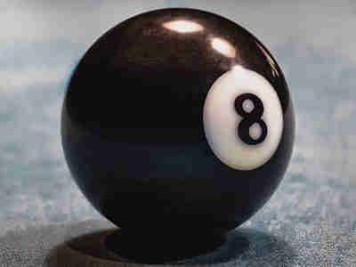

TORNEOS
TIPS Y TRUCOS
JUGADAS DESTACADAS
MINIJUEGO
Acerca del creador
El mundo del Billar
🎱En este diario vamos a ver los actuales torneos que se están disputando. Los mejores tips y jugadas celebres🎱
⏲TORNEOS DISPUTANDOSE⏲
👓TOP TIPS Y AYUDAS PARA MEJORAR👓
🌟JUGADAS CELEBRES DE EFREN REYES🌟
